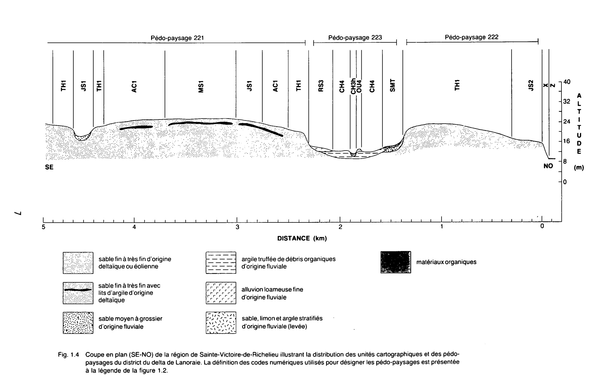

Identification & Caractéristiques Générales
La série Lanoraie est développée sur des dépôts éoliens et deltaïques quaternaires constitués de sables fins à très fins, fréquemment remaniés sous forme de dunes fixées ou mobiles. Ces matériaux parentaux, caractérisés par une texture sableuse homogène comprenant de fortes proportions de sables fins et poudroyeurs (0,5 à 0,05 mm), occupent des superficies importantes associées aux deltas anciens, notamment dans les Basses-Terres du Saint-Laurent et le bassin du Saint-Maurice. La géomorphologie de ces dépôts se caractérise par une topographie généralement ondulée à fortement ondulée, marquée par la présence de crêtes dunaires et de terrasses.
Le profil pédologique des sols de la série Lanoraie est jeune, faiblement évolué et caractérisé par l'absence quasi totale de cailloux et de pierres. La texture est grossière et meuble, composée de 90 à 100 % de sables, ce qui confère au sol une perméabilité très élevée et un drainage naturel excessif. La réaction du sol est acide et la réserve en éléments nutritifs est naturellement très faible en raison de la lixiviation intense. En surface, l'absence de cohésion organique ou minérale, combinée à la faible structure du matériau, rend ces profils particulièrement vulnérables à l'érosion éolienne lors de la mise à nu par le travail cultural.
Les aptitudes agronomiques de la série Lanoraie sont très limitées. En raison de leur faible capacité de rétention en eau et de leur pauvreté chimique inhérente, ces sols souffrent d'une aridité fréquente en période estivale. Leur utilisation agricole traditionnelle se restreint principalement à des productions spécialisées tolérantes aux sols légers, telles que le tabac jaune, ou à l'exploitation forestière dominée par les résineux (pin blanc, pin gris, pin rouge) et les feuillus intolérants (bouleau gris, peuplier). Les interventions agronomiques requises pour viabiliser ces terres incluent l'apport massif et fractionné d'amendements organiques et minéraux, l'enfouissement régulier d'engrais verts, l'installation de brise-vent pour contrer l'érosion éolienne, ainsi que l'évaluation du potentiel pour l'irrigation en culture maraîchère intensive.
Classification Taxonomique & Environnement Pédologique
| Ordre Pédologique | Brunisolique |
|---|---|
| Grand Groupe (SCSS) | Brunisol dystrique |
| Sous-Groupe Taxonomique | Brunisol dystrique orthique |
| Famille Pédologique | Sableuse, mixte sableux, acide |
| Mode de Dépôt Parental | Éolien |
| Classe de Drainage Naturel | Bien drainé |
| Régime Thermique & Humidité | Frais / Subhumide |
Description Morphologique du Profil Type
Séquences génétiques des horizons pédologiques caractérisant le profil type représentatif de la série Lanoraie :
Profil représentatif — Comté de Trois-rivières
✓ Source : Comté de Trois-rivières — Page 28Couleur Munsell : 7.5YR 4/4
Structure & Consistance : Polyédrique à granulaire
Description morphologique : Sable fin, sans structure, brun foncé (7.5YR 4/4), meuble; pH : 5.4.
Couleur Munsell : 10YR 5/2, 10YR 6/3
Structure & Consistance : Polyédrique à granulaire
Description morphologique : Sable fin, sans structure, brun (10YR 5/2) à brun pâle (10YR 6/3), meuble; pH : 5.5.
Couleur Munsell : 2.5Y 6/6
Structure & Consistance : Polyédrique à granulaire
Description morphologique : Sable fin, sans structure, jaune olive (2.5Y 6/6), légèrement ferme; pH : 5.5.
Profil représentatif — Comté de Berthier
✓ Source : Comté de Berthier — Page 52Couleur Munsell : 5YR 3/4
Structure & Consistance : Polyédrique à granulaire
Description morphologique : Débris de feuilles et d'aiguilles de pin non décomposées, brun rouge foncé (5 YR 3/4).
Couleur Munsell : 5Y 5/2
Structure & Consistance : Polyédrique à granulaire
Description morphologique : Débris de matière organique partiellement décomposée, gris olive (5 Y 5/2).
Couleur Munsell : 10YR 5/2, 2.5Y 5/2
Structure & Consistance : Polyédrique à granulaire
Description morphologique : Sable fin, brun (10 YR 5/2) à brun gris (2.5 Y 5/2) pH: 5.4
Couleur Munsell : 10YR 6/3, 10YR 5/6
Structure & Consistance : Polyédrique à granulaire
Description morphologique : Sable fin, brun pâle (10 YR 6/3) à brun jaune (10 YR 5/6) pH: 5.8
Couleur Munsell : 2.5Y 7/4, 10YR 6/6, 2.5Y 4/4
Structure & Consistance : Polyédrique à granulaire
Description morphologique : Sable fin, jaune pâle (2.5 Y 7/4) à jaune brun (10 YR 6/6). Cette teinte à l'état humide devient olive (2.5 Y 4/4), pH: 5.8.
Couleur Munsell : 10YR 6/3, 10YR 7/2
Structure & Consistance : Polyédrique à granulaire
Description morphologique : Sable fin plus compact que les horizons précédents, brun pâle (10 YR 6/3) à gris clair (10 YR 7/2) à l'état humide. pH: 6.3.
Profils Photographiques & Planches de Terrain
Documents iconographiques, figures pédologiques et coupes de terrain documentées dans les mémoires d'inventaire pour de la série Lanoraie :


Propriétés Physico-Chimiques & Analyses de Laboratoire
| Horizon | Prof. (pces/cm) | Sable % | Limon % | Argile % | pH | C % | N % | Ca éch. | Mg éch. | K éch. | H+ éch. | Bases tot. | C.E.C. (meq/100g) | Saturation % |
|---|---|---|---|---|---|---|---|---|---|---|---|---|---|---|
| L-H | 2-3 | 87.4 | 9.4 | 3.2 | 5.6 | 4.18 | 0.18 | 5.3 | 1.1 | 0.15 | 5.7 | 6.6 | 12.3 | 53.7 |
| Bfj1 | trace | 92.4 | 4.0 | 3.6 | 5.2 | 1.81 | 0.08 | 0.3 | 0.1 | 0.05 | 4.3 | 0.5 | 4.8 | 10.4 |
| Bfj2 | 5-6 | 97.4 | 1.2 | 1.4 | 5.3 | 0.61 | 0.01 | 0.2 | 0.1 | 0.05 | 0.3 | 0.4 | 0.7 | 57.1 |
| C | 97.8 | 1.4 | 0.8 | 5.2 | 0.39 | 0.01 | 0.2 | 0.1 | 0.05 | 0.0 | 0.4 | 0.4 | 100.0 |
Particularités Régionales, Phases & Variantes Pédologiques
Déclinaisons régionales, faciès texturaux, phases d'érosion ou de pierrosité et variantes cartographiées par étude pour de la série Lanoraie :
| Étude Régionale | Symbole | Appellation / Phase / Variante | Différenciation avec la série type (Analyse pédologique) |
|---|---|---|---|
| Comté de Chambly | SB3 |
Saint-Blaise loam | Modalité modale de référence (type de base de la série). |
SB3h |
Saint-Blaise loam humifère | Phase humifère enrichie en matière organique superficielle. | |
SB4 |
Saint-Blaise loam limono-argileux | Faciès argileux plus lourd et compact que le loam de référence. | |
SB4b |
Saint-Blaise loam limono-argileux 3-8 % de pente | Faciès argileux plus lourd et compact que le loam de référence. | |
SB4m |
Saint-Blaise loam limono-argileux mince | Phase mince sur substrat rocheux (< 50 cm); Faciès argileux plus lourd et compact que le loam de référence. | |
SB4p |
Saint-Blaise loam argileux pierreux | Phase pierreuse (abondance de cailloux et blocs en surface); Faciès argileux plus lourd et compact que le loam de référence. | |
SB5 |
Saint-Blaise argile limoneuse | Faciès argileux plus lourd et compact que le loam de référence. | |
SBa3 |
Saint-Blaise variante non calcaire loam | Variante décarbonatée (non calcaire) à réaction plus acide. | |
SBa4 |
Saint-Blaise variante non calcaire loam limono-argileux | Variante décarbonatée (non calcaire) à réaction plus acide; Faciès argileux plus lourd et compact que le loam de référence. | |
| Comté de Châteauguay | B |
Saint-Blaise loam argileux | Faciès argileux plus lourd et compact que le loam de référence. |
| Comté de Iberville | SB |
Saint-Blaise argileux sur till loameux fin alcalin | Phase peu profonde sur till; Faciès argileux plus lourd et compact que le loam de référence. |
| Comté de Laprairie | SB3 |
Saint-Blaise loam | Conforme à la série type de référence (caractéristiques texturales et drainage identiques). |
SB3h |
Saint-Blaise loam humifère | Phase humifère enrichie en matière organique superficielle. | |
SB3p |
Saint-Blaise loam légèrement à modérément pierreux | Phase légèrement à modérément pierreuse (obstruction mécanique modérée). | |
SB4 |
Saint-Blaise loam limono-argileux | Faciès argileux plus lourd et compact que le loam de référence. | |
SB4p |
Saint-Blaise loam argileux légèrement à modérément pierreux | Phase légèrement à modérément pierreuse (obstruction mécanique modérée); Faciès argileux plus lourd et compact que le loam de référence. | |
SB5 |
Saint-Blaise argile limoneuse | Faciès argileux plus lourd et compact que le loam de référence. | |
| Les sols de l’Île de Montréal | Bl |
Saint-Blaise loam | Conforme à la série type de référence (caractéristiques texturales et drainage identiques). |
Bl-a |
Saint-Blaise argile mince | Phase mince sur substrat rocheux (< 50 cm); Faciès argileux plus lourd et compact que le loam de référence. | |
| Comté de Napierville | SB |
Saint-Blaise | Conforme à la série type de référence (caractéristiques texturales et drainage identiques). |
SBh |
Saint-Blaise humifère | Phase humifère enrichie en matière organique superficielle. | |
| Comté de Rouville | SB3 |
Saint-Blaise loam | Conforme à la série type de référence (caractéristiques texturales et drainage identiques). |
SB4 |
Saint-Blaise loam limono-argileux | Faciès argileux plus lourd et compact que le loam de référence. | |
SB4p |
Saint-Blaise loam limono-argileux légèrement à modérément pierreux | Phase légèrement à modérément pierreuse (obstruction mécanique modérée); Faciès argileux plus lourd et compact que le loam de référence. | |
| Comté de Saint-jean | SB |
Saint-Blaise loam | Conforme à la série type de référence (caractéristiques texturales et drainage identiques). |
SBbp |
Saint-Blaise loam 3-8% de pente légèrement à modérément pierreux | Phase légèrement à modérément pierreuse (obstruction mécanique modérée). | |
| Comté de Verchères | SB4 |
Saint-Blaise loam limono-argileux | Faciès argileux plus lourd et compact que le loam de référence. |
SB5 |
Saint-Blaise argile limoneuse | Faciès argileux plus lourd et compact que le loam de référence. | |
SB5m |
Saint-Blaise argile limoneuse mince | Phase mince sur substrat rocheux (< 50 cm); Faciès argileux plus lourd et compact que le loam de référence. | |
| Comté de Argenteuil | L |
Lanoraie sable | Faciès sableux très filtrant et pauvre en éléments nutritifs vis-à-vis du loam de référence; Drainage bien drainé (distinct du drainage de référence mal drainé); Sous-groupe brunisol dystrique orthique (sans caractères gleyifiés marqués). |
| Comté de Berthier | L |
Lanoraie sable fin | Faciès sableux très filtrant et pauvre en éléments nutritifs vis-à-vis du loam de référence; Drainage bien drainé (distinct du drainage de référence mal drainé); Sous-groupe brunisol dystrique orthique (sans caractères gleyifiés marqués). |
| Comté de Champlain | L |
Lanoraie sable fin | Faciès sableux très filtrant et pauvre en éléments nutritifs vis-à-vis du loam de référence; Drainage bien drainé (distinct du drainage de référence mal drainé); Sous-groupe brunisol dystrique orthique (sans caractères gleyifiés marqués). |
| Comté de Joliette | L |
Lanoraie sable fin | Faciès sableux très filtrant et pauvre en éléments nutritifs vis-à-vis du loam de référence; Drainage bien drainé (distinct du drainage de référence mal drainé); Sous-groupe brunisol dystrique orthique (sans caractères gleyifiés marqués). |
| Comté de Trois-rivières | L |
Lanoraie sable fin | Faciès sableux très filtrant et pauvre en éléments nutritifs vis-à-vis du loam de référence; Drainage bien drainé (distinct du drainage de référence mal drainé); Sous-groupe brunisol dystrique orthique (sans caractères gleyifiés marqués). |
Distribution Pédo-Paysagère & Représentativité Cartographique (Couverture PPS 2026)
- Saint-Thomas sable très fin (SNS) — co-occurrente dans 50 polygone(s)
- Dunes de sable (DDD) — co-occurrente dans 44 polygone(s)
- Uplands sable fin (UPD) — co-occurrente dans 13 polygone(s)
Aptitudes Agronomiques, Hydropédologie & Conservation des Sols
Indicateurs Hydropédologiques & Vulnérabilité à l'Érosion (BDHP 2026)
Interprétation BDHP : Potentiel de ruissellement faible. Sols à infiltration rapide (sables profonds, graviers bien drainés).
Classement selon l'Inventaire des Terres du Canada (ITC / CLI) : Classe 3m.
- Potentiel agricole : Terroir adapté aux cultures régionales selon la texture dominante et la régie de drainage.
- Contraintes majeures : Bien drainé. Risque d'engorgement temporaire ou d'excès d'eau printanier.
- Gestion & Aménagement : Drainage souterrain ou superficiel préconisé sur les terres planes. Chaulage et apport organique régulier selon les bilans agronomiques.
- Cultures adaptées : Grandes cultures (maïs, soya, céréales), prairies fourragères et cultures maraîchères selon le contexte géomorphologique.